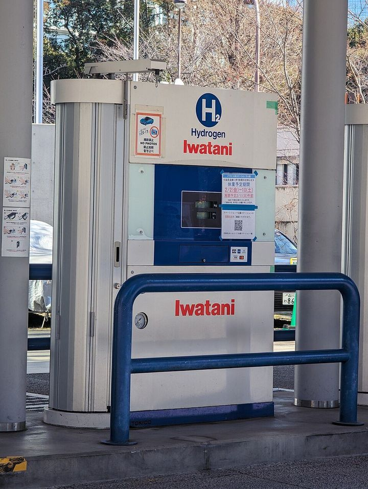
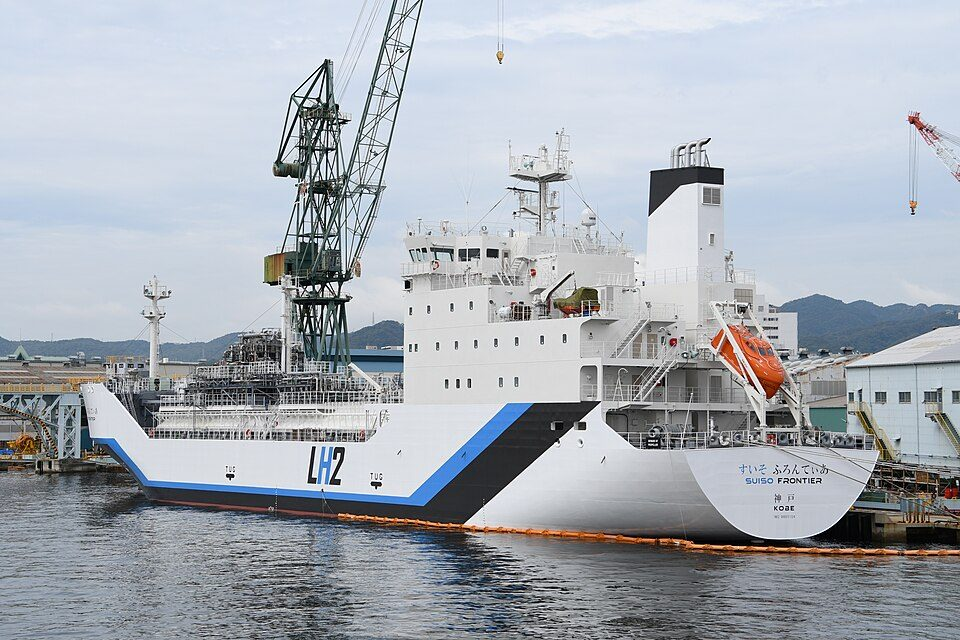

水素エネルギーとは？ 作り方・ため方・燃料電池の仕組みと、日本の目標
要点まとめ
ニュースでよく聞く「水素社会」。資源エネルギー庁は、脱炭素化が難しい鉄鋼・化学・モビリティなどの分野で、カギを握るエネルギーのひとつが水素だと説明しています[8]。この記事では、水素の作り方・ため方・運び方、燃料電池の仕組み、国の目標と支援制度を、水素基本戦略や資源エネルギー庁の資料、IEA（国際エネルギー機関）の報告書などでまとめました。期待だけでなく、コスト・効率・インフラの課題も数字で紹介します。

水素エネルギーとは
使うときに、CO2を出さない
燃料電池で使っても、燃やしても、できるのは水
NEDO（新エネルギー・産業技術総合開発機構）は、水素を「再生可能エネルギーから製造可能で、使用時にも二酸化炭素を排出しない」エネルギーと説明しています[1]。水素が燃えるのは、水素が酸素と結びついて水ができる反応です[9]。燃料電池も、水素と酸素が反応して水になる過程で電気を取り出します[4]。ただし、水素を作るときにCO2を出すかどうかは、作り方によって違います[10]。
グレー・ブルー・グリーンは、作り方の違い
化石燃料からか、CO2を回収したか、再エネか
資源エネルギー庁の説明では、化石燃料をもとに作った水素が「グレー水素」です。製造工程で出たCO2を回収して貯留・利用する技術（CCS・CCUS）と組み合わせ、排出をおさえた水素が「ブルー水素」、再生可能エネルギー（再エネ）などを使い、製造工程でもCO2を出さずに作った水素が「グリーン水素」です[10]。法律では、色ではなく、作るときに出るCO2の量で「低炭素水素」かどうかを決めています[3]。
「低炭素水素」は、1kgあたりCO2 3.4kg以下
水素社会推進法の施行規則で、数値の基準が決まった
水素社会推進法の施行規則は、水素1kgを作るときに出るCO2（ほかの温室効果ガスも換算して加える）が3.4kg以下であることを、低炭素水素の要件としています[3]。アンモニアは、1kgあたり0.87kg以下です[3]。水素基本戦略は、原料の生産から水素製造装置の出口まで（Well to Production Gate）で数えるとしています[6]。
軽くて燃えやすい。安全対策が前提
燃える濃さの範囲が広く、炎もほとんど見えない
経済産業省の保安の資料は、水素はあらゆるガスの中で最も軽く、無色・無臭で、燃えたときの炎もほとんど目に見えないとしています[12]。拡散しやすい、着火しやすい、一部の金属材料をもろくする（脆化）といった性質もあります[12]。一方、福岡市は、自然発火温度が527℃とガソリンより高く、漏れてもすぐに薄まると説明しています[9]。燃料電池車などは「漏らさない」「漏れを検知したら止める」「漏れた水素はためない」という対策をとっています[9]。
| 性質 | 水素 | メタン（参考） |
|---|---|---|
| 燃える濃さの範囲（空気中） | 4〜75%[12] | 5〜15%[12] |
| 着火に必要な最小のエネルギー | 0.02mJ[12] | 0.28mJ[12] |
どうやって作る？
世界の水素の大半は、化石燃料から
低排出の水素が1%を超えるのは、2026年が初めての見込み
IEAによると、2025年の世界の水素需要は1億トンを超えました[13]。世界の水素の生産は、CO2対策をしていない化石燃料によるものが大半です[2]。報告書の第1章によると、2025年に世界で作られた水素のほぼ65%は、天然ガスが原料でした[14]。低排出の水素は2025年に20%増えて約100万トン近くになりましたが[14]、世界の生産の1%を超えるのは、2026年が初めてになる見込みです[2]。
| 作り方 | 原料・エネルギー | 製造時のCO2 | 色の呼び方 |
|---|---|---|---|
| 改質（水蒸気改質など） | 天然ガス（メタン）など化石燃料[10] | CCSなどを使わない限り出る[15] | グレー[10] |
| 改質＋CO2の回収・貯留 | 化石燃料[10] | 回収して排出をおさえる[10] | ブルー[10] |
| 水の電気分解（再エネの電気） | 水と、再エネの電気[10] | 出ない[15] | グリーン[10] |
| 水の電気分解（火力などの電気） | 水と、火力などの電気[15] | 発電のときに出る[15] | ― |
| 副生水素 | 製鉄所やソーダ工業などで、ほかの製品と一緒にできる[15] | 出るが、追加の負荷はない[15] | ― |
| バイオマス | 家畜のふん尿など[16] | ゼロとみなせる[15] | ― |
色の呼び方は資源エネルギー庁の説明によります。「―」は、その説明に呼び方がないものです。製造時のCO2の評価は、2015年のNEDOの資料の表によります[15]。家庭用燃料電池のエネファームも、都市ガスから水素を取り出す「改質」をしています[10]。
国内最大の水電解は、山梨の16MW
福島のFH2R（10MW）に続き、より大きな設備が稼働
福島県浪江町の「福島水素エネルギー研究フィールド（FH2R）」は、敷地内の太陽光発電（20MW）の電気で、10MWの水電解装置を動かす施設です[17]。2020年2月末に完成し、定格運転で毎時1,200Nm³の水素を作る能力があります[17]。これまでに1万時間以上運転し、2027年度まで実証を続ける予定です[18]。山梨県北杜市の「グリーン水素パーク -白州-」は国内最大規模の16MWで、フル稼働すると年2,200tの水素を作れます[19]。2025年10月から、隣の飲料工場にボイラーの燃料として供給しています[19]。
どうやってためて、運ぶ？
水素は体積あたりのエネルギー密度が低く、運ぶことが課題とされてきました[20]。そのため、高い圧力で押し縮める、冷やして液体にする、ほかの物質に変えるといった方法で運びます。
| 方法 | 状態 | 1m³あたりの水素 | 特徴・課題 | 日本の例 |
|---|---|---|---|---|
| 圧縮水素 | 高い圧力で押し縮めた気体 | 14kg（20MPa）、23kg（35MPa）、39kg（70MPa）[15] | 燃料電池車のタンクは70MPa（約700気圧）[21] | 燃料電池車（MIRAIなど）[22] |
| 液化水素 | −253℃に冷やした液体。体積は約800分の1[23] | 70kg[15] | 受け入れ先で変換のエネルギーが要らず、純度99.999%の水素を取り出せる[6] | 運搬船「すいそ ふろんてぃあ」[6] |
| MCH（メチルシクロヘキサン） | 常温・常圧の液体。体積は気体の約500分の1[20] | 47kg[15] | 既存のタンクなどを使え、長期の貯蔵もできる[6]。着いたら脱水素の設備で水素を取り出す[20] | ブルネイ→川崎の国際輸送実証[20] |
| アンモニア | −33℃で液体[6] | 今回の資料では数値を確認できず | 肥料用などの供給網がある。水素を取り出すには大規模な分解技術が必要[6]。毒性があり漏えい対策が要る[6] | 火力発電などで、燃料として直接使う取り組み[6] |
1m³あたりの水素の量は、容器を含まない物性値です（2014年の資源エネルギー庁の資料をもとにしたNEDOの図）[15]。水素基本戦略は、アンモニアの水素密度は「他技術と比較しても大きい」としています[6]。

液化水素を船で運ぶ「すいそ ふろんてぃあ」
オーストラリアから神戸まで、約9,000kmを運んだ
液化水素運搬船「すいそ ふろんてぃあ」は、1,250m³の液化水素（燃料電池車約1万5,000台を1回満たす分）を一度に運べます[23]。2021年12月に、日豪間で世界初の液化水素の輸送実証が行われ[24]、2022年2月に神戸への大規模な海上輸送を完了しました[6]。積んだ水素は、オーストラリアで褐炭（石炭の一種）から作ったものです[25]。
MCHなら、常温・常圧の液体で運べる
トルエンに水素を結びつけて運び、着いたら取り出す
NEDOの実証では、ブルネイで水素とトルエンを結びつけたMCHを船で運び、川崎市の脱水素プラントで水素を取り出して、発電所のガスタービンに供給しました[20]。水素を取り出したあとのトルエンはブルネイに戻し、くり返し使います[20]。水素基本戦略によると、この国際輸送の実証は2020年12月に完了しています[6]。
燃料電池の仕組み
燃料電池は「水の電気分解の逆」
水素と酸素を反応させて、電気と水をつくる
パナソニックの解説によると、水素極（燃料極）に触れた水素は、電子を放して水素イオンになります。電子は電解質の中を通れないので、外の電気回路を通って空気極へ流れます。これが電気です。水素イオンは電解質の中を通って空気極へ行き、電子を取り込んで酸素と結びつき、水になります[4]。パナソニックは、原理的には「水の電気分解の逆」で発電すると説明しています[4]。
| 種類 | 動作温度 | 発電効率（HHV） | 主な用途 |
|---|---|---|---|
| 固体高分子形（PEFC） | 70〜90℃[4] | 30〜40%[4] | 家庭用・自動車用[4] |
| りん酸形（PAFC） | 180〜200℃前後[4] | 35〜42%[4] | 工場・事業所のコージェネレーション[4] |
| 溶融炭酸塩形（MCFC） | 600〜700℃[4] | 約40〜50%[4] | 火力発電所などの代わりとして期待[4] |
| 固体酸化物形（SOFC） | 700〜1,000℃[4] | 40〜65%[4] | 家庭用。火力発電所などの代わりとしても期待[4] |
種類は、使う電解質の違いで分かれます[4]。NEDOのロードマップも、家庭用と業務・産業用の燃料電池として、SOFCとPEFCを扱っています[26]。
家庭用の「エネファーム」は累計約56万台
都市ガスなどから取り出した水素で発電し、排熱でお湯も
エネファームは、都市ガスやLPガスから取り出した水素と、空気中の酸素で発電する家庭用燃料電池で、発電と同時に出る熱を給湯などに使います[27]。2009年5月1日に固体高分子形（PEFC）が世界で初めて発売され、2011年には固体酸化物形（SOFC）も加わりました[27]。メーカーの出荷台数の累計は、2025年9月末時点で562,507台です[28]。
燃料電池車：MIRAIは水素タンク3本
70MPaの高圧タンクに水素をためて走る
トヨタの「MIRAI」（2代目）は、固体高分子形の燃料電池と、3本で合計141Lの高圧水素タンク（公称使用圧力70MPa）を積んでいます[22]。トヨタは、一充填走行距離をGグレードで約850km（WLTCモードの燃料消費率から計算）としています[30]。初代MIRAIは2014年12月15日に発売されました[21]。
水素ステーションは、全国141か所
2026年7月1日現在。国の目標は1,000基程度
次世代自動車振興センターによると、2026年7月1日現在、水素ステーションは全国141か所で運用されています（国の補助事業の交付決定を受けて運用しているもの）[7]。水素基本戦略は、2030年度までに1,000基程度を整備する目標を掲げています[6]。
国の目標と支援制度
見方: 資源エネルギー庁の資料（2025年1月）は、現在の約200万tから、2030年に最大300万t、2040年に1,200万t程度、2050年に2,000万t程度という流れを示しています。目標の数字には、水素のほかに、直接燃やすアンモニアなどの量（水素に換算）も含みます[5]。
水素基本戦略（2023年改定）
2040年に1,200万t程度という目標を新しく加えた
日本は2017年に、世界で初めての水素の国家戦略「水素基本戦略」をつくりました[6]。2023年6月6日の改定では、2030年に最大300万t/年、2050年に2,000万t/年程度という目標に、2040年に1,200万t/年程度（アンモニアを含む）という目標を加えました[6]。供給コストは、2030年に30円/Nm³（約334円/kg）、2050年に20円/Nm³（約222円/kg）を目標にしています[6]。官民の投資は、15年で15兆円を超える計画です[6]。
水素社会推進法と「価格差に着目した支援」
既存の燃料との価格の差を、15年間支援する
水素社会推進法（正式名は「脱炭素成長型経済構造への円滑な移行のための低炭素水素等の供給及び利用の促進に関する法律」）は、2024年5月に成立し[5]、5月24日に公布、10月23日に施行されました[33]。国の認定を受けた事業者への支援には、低炭素水素等の価格（基準価格）と、既存の燃料・原料の価格（参照価格）の差額を支援する「価格差に着目した支援」と、複数の事業者が共同で使う輸送・貯蔵設備の整備を支援する「拠点整備支援」があります[34]。価格差の支援は供給開始から15年間で、支援が終わったあとの10年間は供給を続ける義務があります[8]。
事業計画の認定は、これまでに9件
最初の認定は2025年9月30日、最新は2026年6月30日
資源エネルギー庁の一覧によると、事業計画の認定は、2025年9月30日に2件、12月19日に2件、2026年3月27日に4件、6月30日に1件です[34]。たとえば最初の認定（第1号）は、豊田通商、ユーラスエナジーホールディングス、岩谷産業、愛知製鋼の4社による計画です[34]。IEAは、日本では発電の分野で、政策の支援によって投資の決定まで進んだ計画があるとしています[14]。
水素をめぐる、国の政策と主な実証の流れです。
- 2009年
家庭用燃料電池「エネファーム」が発売
- 2014年12月
燃料電池車「MIRAI」（初代）が発売
- 2017年
「水素基本戦略」を策定
世界で初めての水素の国家戦略[6]
- 2020年2月末
福島のFH2R（10MW）が完成し、稼働
- 2020年12月
MCHによる国際輸送の実証が完了
ブルネイ→川崎[6]
- 2021年12月〜2022年2月
液化水素を船で日本へ運ぶ実証
- 2023年6月
水素基本戦略を改定
2040年の目標と、低炭素水素の基準を示す[6]
- 2024年10月
水素社会推進法が施行
- 2025年2月
第7次エネルギー基本計画を閣議決定
- 2025年9月
水素社会推進法の事業計画を初めて認定
- 2025年10月
山梨の16MWの拠点から、工場へ供給開始
- 2026年6月
9件目の事業計画を認定
課題：コスト・効率・インフラ・需要
コスト：低排出の水素は、まだ高い
水素の価格は1m³あたり100円。2030年の目標は30円
環境省の解説によると、液化天然ガス（LNG）の価格を水素の供給コストに換算すると1m³あたり24円なのに対し、水素の価格は100円です[16]。水素基本戦略は、この24円を2023年3月のLNG価格から換算しています[6]。IEAは、中国を除く世界の多くの地域で、当面は低排出の水素が化石燃料由来の水素より高いままだとみています[13]。
効率：電気→水素→電気で、多くが失われる
往復の効率を示す公的な数字は、見つからなかった
電気で水素を作り、燃料電池でまた電気に戻すと、それぞれの段階で損失が出ます。IEAは試算の前提として、水電解の効率を60%（低位発熱量基準）としています[14]。水素基本戦略によると、業務・産業用燃料電池の発電効率は現状40〜55%で、2030年に60%を目指しています[6]。運ぶ段階では、2014年の資源エネルギー庁の資料をもとにしたNEDOの表で、採掘から水素ステーションでの充填までのチェーン全体の効率が、2030年の見通しで高圧ガス54.7%、液化水素55.7%、MCH52.1%とされています[15]。
資料によって効率の基準（低位発熱量・高位発熱量など）が違うため、この試算は大まかな目安です。
インフラ：ステーションも車も、目標に遠い
燃料電池車の販売は、2021年度の約4分の1に
燃料電池車（乗用車）の保有台数は、2024年度末で8,289台です[36]。国は2030年までに、乗用車換算で80万台程度の普及を目標にしています[6]。水素ステーションも、141か所（2026年7月1日現在）に対し、目標は2030年度までに1,000基程度です[7][6]。
需要：買い手がまだ少ない
新しい引き取り契約のうち、確定的なものは約2割
IEAによると、2025年に新たに結ばれた水素の引き取り契約は約170万tで、確定的な契約に裏づけられたものは約20%でした[13]。2030年までに計画されている低排出水素の生産は、前の年の報告より1,000万t減って、2,700万tになりました[2]。
筆者の見解
ニュースで聞く「水素社会」は、家庭や乗用車だけの話ではなく、電化が難しい鉄鋼・化学や商用車、火力発電で化石燃料を置き換えることが中心だと考えられます。資源エネルギー庁の資料も、こうした分野での活用を挙げています[5]。一方で、作るときのCO2、コスト、効率、インフラには、いまも大きな課題があります。
今回確認できなかった点
- 電気→水素→電気の往復の効率を、直接示した公的な数字
- 認定された9件の事業計画ごとの、支援の種類（価格差支援か拠点整備支援か）と、量・用途
- 第7次エネルギー基本計画の確定版の本文（案で確認した）
- 2025年度の燃料電池車の販売台数
- 水素の密度（空気と比べた軽さ）を数値で示した公的な資料
- アンモニアで運ぶときの、1m³あたりの水素の量
- 水素社会推進法が成立した日（公的な資料では2024年5月まで確認）
関連する記事
出典（36件）
閲覧日はいずれも2026年11月10日〜11日
- 再エネによる世界最大級の水素製造拠点が福島県浪江町で誕生（2020年2月13日）（NEDO）
- Global Hydrogen Review 2026: Production（2026年6月）（IEA（国際エネルギー機関））
- 脱炭素成長型経済構造への円滑な移行のための低炭素水素等の供給及び利用の促進に関する法律施行規則（令和6年経済産業省令第69号）（e-Gov法令検索）
- 燃料電池とは（家庭用燃料電池 エネファーム）（パナソニック）
- エネルギー政策の方向性（資料1-1、2025年1月、PDF）（資源エネルギー庁（環境省 北海道地方環境事務所のサイトに掲載））
- 水素基本戦略（2023年6月6日、PDF）（再生可能エネルギー・水素等関係閣僚会議（内閣官房））
- 水素ステーション普及状況（次世代自動車振興センター）
- 目前に迫る水素社会の実現に向けて～「水素社会推進法」が成立（後編）クリーンな水素の利活用へ（エネこれ、2024年9月10日）（資源エネルギー庁）
- 水素について（福岡市）
- 次世代エネルギー「水素」、そもそもどうやってつくる？（エネこれ、2021年10月12日）（資源エネルギー庁）
- 国内の水電解等水素製造における炭素集約度算定方法の検討調査（PDF）（水素バリューチェーン推進協議会（NEDO水素・アンモニア成果報告会2025））
- 水素保安の動向について（2024年7月、PDF）（経済産業省 産業保安・安全グループ（神奈川県のサイトに掲載））
- Global Hydrogen Review 2026: Executive summary（2026年6月）（IEA（国際エネルギー機関））
- Global Hydrogen Review 2026（2026年6月、PDF）（IEA（国際エネルギー機関））
- 水素エネルギー白書 第6章 水素エネルギー技術（2015年、PDF）（NEDO）
- ecojin「水素基本戦略」（2023年11月15日）（環境省）
- 再エネを利用した世界最大級の水素製造施設「FH2R」が完成（2020年3月7日）（NEDO）
- 福島から広がる水素エネルギー活用の取り組み（2026年3月6日、PDF）（NEDO 水素・アンモニア部）
- 国内最大規模の水電解による水素製造拠点が稼働（NEDO グリーンイノベーション基金）
- 世界初、水素を輸送する国際実証試験を本格開始（2020年6月25日）（NEDO）
- TOYOTA、セダンタイプの新型燃料電池自動車「MIRAI」を発売（2014年11月18日）（トヨタ自動車）
- MIRAI 主要諸元表（PDF）（トヨタ自動車）
- 世界初の液化水素運搬船「すいそ ふろんてぃあ」（兵庫県）
- 国際水素サプライチェーンの商用化に向けた新たな一歩（2023年6月19日、PDF）（国土交通省 海事局）
- 液化水素海上輸送実証試験の日豪サプライチェーン完遂記念式典が開催（2022年4月19日）（NEDO）
- 定置用燃料電池技術開発ロードマップ 解説書（2023年2月、PDF）（NEDO）
- 家庭用燃料電池「エネファーム」累計販売台数50万台突破について（2024年1月12日、PDF）（エネファームパートナーズ）
- エネファーム メーカー出荷台数統計（2025年9月末時点、PDF）（コージェネ財団）
- 「エネファーム普及セミナー2025」を開催します！（エネファームパートナーズ（日本ガス協会のサイト））
- 【MIRAI】1回の水素満充填でどのくらい走行できますか？（トヨタ自動車）
- 地球温暖化対策計画（2025年2月18日閣議決定、PDF）（環境省）
- エネルギー基本計画（案）（2024年12月、PDF）（経済産業省（e-Govパブリック・コメント））
- 脱炭素成長型経済構造への円滑な移行のための低炭素水素等の供給及び利用の促進に関する法律（令和6年法律第37号）（e-Gov法令検索）
- 脱炭素成長型経済構造への円滑な移行のための低炭素水素等の供給及び利用の促進に関する法律（水素社会推進法）（資源エネルギー庁）
- EV等 販売台数統計（次世代自動車振興センター）
- EV等 保有台数統計（次世代自動車振興センター）
写真・画像の出典（2件）
- 水素ステーションの充填機（東京都港区）
写真: Syced／Wikimedia Commons（CC0） - 液化水素運搬船「すいそ ふろんてぃあ」（2020年、神戸）
写真: Hunini／Wikimedia Commons（CC BY-SA 4.0）